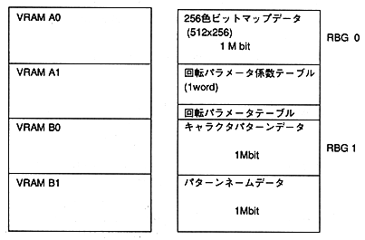

Return to previous page ｜ Return to menu ｜ Go to next page
- [Example 2] Using two rotating surfaces
∙ Each rotation plane data such as character data (bitmap data) and pattern name data can be placed in only one bank. In addition, the layout of RGB1 is fixed to character pattern data in VRAMB0 and pattern name data in VRAMB1.

Figure 3 Using two rotating surfaces
Return to previous page ｜ Return to menu ｜ Go to next page